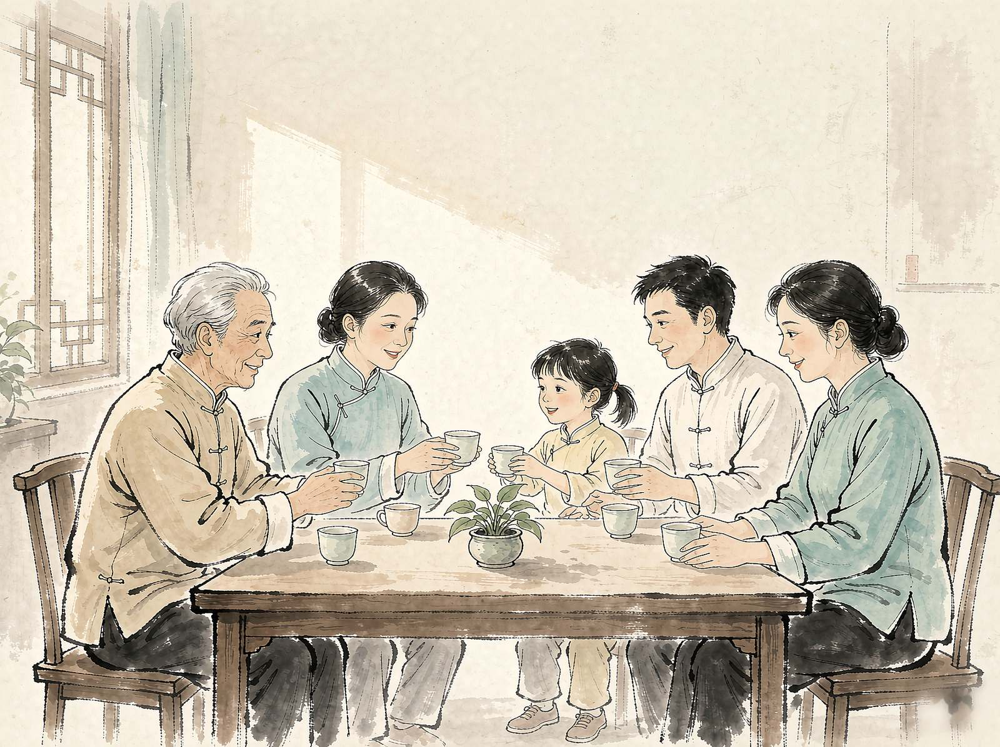

乃九族，人之伦
对比前文阴阳太和：天地为大伦，九族为人伦。伦不是人为强加的规矩，是顺着生生因缘自然呈现的位次；次序不等于等级，位次之上不再附加价值高低。
勘破俗见：有人把「伦」读成束缚人的等级礼法。要义是——伦是因缘的次序假名，有次第而不生我慢，守本分而不固着身份。佛说人伦，即非人伦，是名人伦：伦是方便安立的位次，自性之中本无尊卑高下。
前面九代，一代一代排下来：高祖、曾祖、祖父、父亲、我们、孩子、孙子、曾孙、玄孙。
经文一句收住：这九代，就是「九族」；这条次序，就是「人之伦」。
伦，是次序，是本分。像四季有先后，像草木有生长的次第，人和亲人之间，也有天然的先后源流。

懂得这个次序，就知道敬长、知道慈幼，一家人和和气气，不傲慢，也不轻慢。

但次序是方便，不是拿来分贵贱的。上座下座，是坐的位置；心里那杆秤，对谁都要平。
落到心上理解：在伦序里尽孝、尽慈，是顺着因缘走；不把位次当成「我高你一等」或「我低你一头」的凭据。
行其分，不住其相——这样在人情里做事，心却是松的。
执着辈分尊卑，倚长凌幼、以身份自傲；或视人伦为强制规矩，心里生出抗拒与委屈。
知长幼是流转位次，各尽其责，内心不起高下之执；见伦序源于生生缘起，顺理而行，不被身份困住。
- 高祖到玄孙这九代，合起来叫做九族，构成人伦次序。
- 人伦是生命传承自然形成的先后脉络。
- 长幼有序，核心是恭敬、体恤、彼此善待，不是分贵贱。
- 位次是方便的名字，所有人的本心，本自平等。
一、勘俗见。纵向血脉伦理到此收束。前面是天地万物之理；落到人身上，最先显发的就是亲族之伦，正呼应开篇「首孝悌」。孝悌不是教条，是人伦缘起上的第一重实践。
二、现代对照。现代家庭结构多变，不必硬凑九族。可以引申：凡是因缘相遇之人，相处都有分寸与次序，这也是广义之伦。
三、承接常变主线。家族形态、相处方式随时代改变（可变之相）；因缘有序、敬慈相待的内核不变（常）。
四、承接教与学二分。家长示范长幼之间互相体恤、尊重，属施教一侧；孩子在相处里学会守分寸、不起傲慢，是自主修习。
接上选择力练习：安于人伦位次，尽本分，不执尊卑之相。
乃九族，人之伦
一 · 字义与句读乃，是；九族，高祖、曾祖、祖、父、己身、子、孙、曾孙、玄孙；伦，伦次、理序、本分。
全句释义：这一脉九代相续的谱系，即是人天然的伦理次序。由天道生生，落地为人伦实践。
二 · 命题考辨（一）天道与人伦同构。四时、五行、八音，是天地的条理；九族人伦，是条理落在人族生命上。儒家底层是「天人同序」：不是造一套礼法捆绑人，而是观察生生流转，安立伦次，安顿人心。孝悌，就是在这重因缘次序上践行：对上知敬，对下知慈。
（二）对照当下现代语境。现代容易把「伦」直接等同于旧礼教、压迫。要点在区分：次序≠等级压迫。次序是时间与因缘的先后；等级固化，是在次序之上又附加了恒常的价值高低。我们顺着因缘承担对应责任，却不认同身份带来的贵贱——守伦而不执相。
（三）般若范式互参。人伦位次属因缘假名。联动三才五蕴太极空杯模型：虚空自性为本，血脉、时间因缘为外缘，长幼尊卑只是缘起层面的标记；标记不改变自性本空、本自平等。
（四）延伸义理。《金刚经》破众生相、尊卑相——在人伦中做事，不被尊卑标签困住，即是「应无所住而生其心」。《坛经》自性无长幼贵贱（经中「人虽有南北，佛性本无南北」之义）：色身有先后位次，自性无先后。
呼应「本乎数」：九为极数，九族是人伦一个完整周期的取象。
三 · 跨典互参《道德经》第十八章「大道废，有仁义」——不是否定伦常，是警示仁义、伦序一旦固化成执念，便失其本源。
《庄子·德充符》「自其异者视之，肝胆楚越也；自其同者视之，万物皆一也」——从相异处看，肝与胆远如楚越；从相同处看，万物本是一体。伦次是流转的表象，自性平等。（坊间多引作「万物一也」，是截句，宜引全句。）
串联前文：天地万物、七情音声一路铺展，收束到人伦次第，完成从外境到心性、再落到日用人伦的闭环。
四 · 与前后课的张力呼应「人不学，不知义」：义即是明人伦是因缘次序，知敬慈而离高下。
呼应「玉不琢，不成器」：打磨自心，就在长幼相处之间，消融尊卑分别。
呼应「教之道，贵以专」：见闻之学，最终落脚在人伦日用的修持。
次第链条继续延伸：…… → 九族既具 → 本课（一句总收）。
一、九族是血缘之伦，师徒、同道的法脉之伦，如何纳入这套框架？
二、长幼次序如何守住分寸，既不失恭敬，又不滑入依附、盲从？
三、自性平等而色身有先后，日常相处如何不落两边？